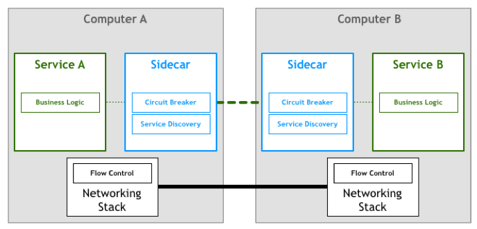
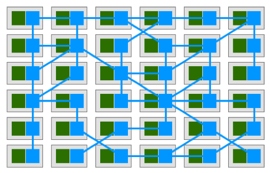
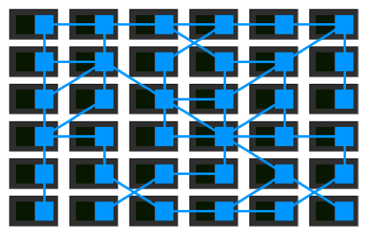
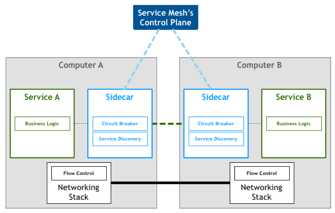
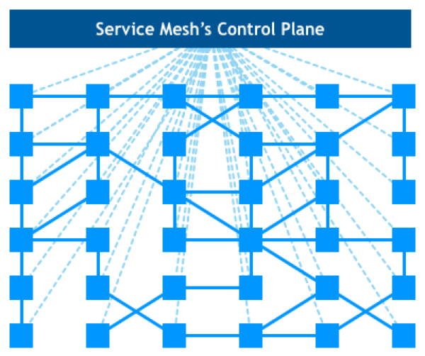
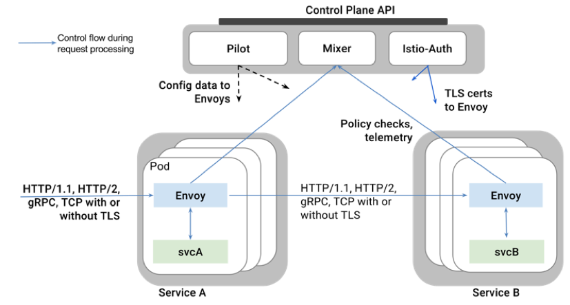

- 000 开篇词 洞悉技术的本质，享受科技的乐趣.md
- 001 程序员如何用技术变现（上）.md
- 002 程序员如何用技术变现（下）.md
- 003 Equifax信息泄露始末.md
- 004 从Equifax信息泄露看数据安全.md
- 005 何为技术领导力.md
- 006 如何拥有技术领导力.md
- 007 推荐阅读：每个程序员都该知道的事.md
- 008 Go语言，Docker和新技术.md
- 009 答疑解惑：渴望、热情和选择.md
- 010 如何成为一个大家愿意追随的Leader？.md
- 011 程序中的错误处理：错误返回码和异常捕捉.md
- 012 程序中的错误处理：异步编程和最佳实践.md
- 013 魔数 0x5f3759df.md
- 014 推荐阅读：机器学习101.md
- 015 时间管理：同扭曲时间的事儿抗争.md
- 016 时间管理：投资赚取时间.md
- 017 故障处理最佳实践：应对故障.md
- 018 故障处理最佳实践：故障改进.md
- 019 答疑解惑：我们应该能够识别的表象和本质.md
- 020 分布式系统架构的冰与火.md
- 021 从亚马逊的实践，谈分布式系统的难点.md
- 022 分布式系统的技术栈.md
- 023 分布式系统关键技术：全栈监控.md
- 024 分布式系统关键技术：服务调度.md
- 025 分布式系统关键技术：流量与数据调度.md
- 026 洞悉PaaS平台的本质.md
- 027 推荐阅读：分布式系统架构经典资料.md
- 028 编程范式游记（1）- 起源.md
- 029 编程范式游记（2）- 泛型编程.md
- 030 编程范式游记（3） - 类型系统和泛型的本质.md
- 031 Git协同工作流，你该怎样选.md
- 032 推荐阅读：分布式数据调度相关论文.md
- 033 编程范式游记（4）- 函数式编程.md
- 034 编程范式游记（5）- 修饰器模式.md
- 035 编程范式游记（6）- 面向对象编程.md
- 036 编程范式游记（7）- 基于原型的编程范式.md
- 037 编程范式游记（8）- Go 语言的委托模式.md
- 038 编程范式游记（9）- 编程的本质.md
- 039 编程范式游记（10）- 逻辑编程范式.md
- 040 编程范式游记（11）- 程序世界里的编程范式.md
- 041 弹力设计篇之“认识故障和弹力设计”.md
- 042 弹力设计篇之“隔离设计”.md
- 043 弹力设计篇之“异步通讯设计”.md
- 044 弹力设计篇之“幂等性设计”.md
- 045 弹力设计篇之“服务的状态”.md
- 046 弹力设计篇之“补偿事务”.md
- 047 弹力设计篇之“重试设计”.md
- 048 弹力设计篇之“熔断设计”.md
- 049 弹力设计篇之“限流设计”.md
- 050 弹力设计篇之“降级设计”.md
- 051 弹力设计篇之“弹力设计总结”.md
- 052 区块链技术 - 区块链的革命性及技术概要.md
- 053 区块链技术 - 区块链技术细节 - 哈希算法.md
- 054 区块链技术 - 区块链技术细节 - 加密和挖矿.md
- 055 区块链技术 - 去中心化的共识机制.md
- 056 区块链技术 - 智能合约.md
- 057 区块链技术 - 传统金融和虚拟货币.md
- 058 管理设计篇之分布式锁.md
- 059 管理设计篇之配置中心.md
- 060 管理设计篇之边车模式.md
- 061 管理设计篇之服务网格.md
- 062 管理设计篇之网关模式.md
- 063 管理设计篇之部署升级策略.md
- 064 性能设计篇之缓存.md
- 065 性能设计篇之异步处理.md
- 066 性能设计篇之数据库扩展.md
- 067 性能设计篇之秒杀.md
- 068 性能设计篇之边缘计算.md
- 069 程序员练级攻略（2018）：开篇词.md
- 070 程序员练级攻略（2018）：零基础启蒙.md
- 071 程序员练级攻略（2018）：正式入门.md
- 072 程序员练级攻略（2018）：程序员修养.md
- 073 程序员练级攻略（2018）：编程语言.md
- 074 程序员练级攻略：理论学科.md
- 075 程序员练级攻略（2018）：系统知识.md
- 076 程序员练级攻略（2018）：软件设计.md
- 077 程序员练级攻略（2018）：Linux系统、内存和网络.md
- 078 程序员练级攻略（2018）：异步IO模型和Lock-Free编程.md
- 079 程序员练级攻略（2018）：Java底层知识.md
- 080 程序员练级攻略（2018）：数据库.md
- 081 程序员练级攻略（2018）：分布式架构入门.md
- 082 程序员练级攻略（2018）：分布式架构经典图书和论文.md
- 083 程序员练级攻略（2018）：分布式架构工程设计.md
- 084 程序员练级攻略（2018）：微服务.md
- 085 程序员练级攻略（2018）：容器化和自动化运维.md
- 086 程序员练级攻略（2018）：机器学习和人工智能.md
- 087 程序员练级攻略（2018）：前端基础和底层原理.md
- 088 程序员练级攻略（2018）：前端性能优化和框架.md
- 089 程序员练级攻略（2018）：UIUX设计.md
- 090 程序员练级攻略（2018）：技术资源集散地.md
- 091 程序员面试攻略：面试前的准备.md
- 092 程序员面试攻略：面试中的技巧.md
- 093 程序员面试攻略：面试风格.md
- 094 程序员面试攻略：实力才是王中王.md
- 095 高效学习：端正学习态度.md
- 096 高效学习：源头、原理和知识地图.md
- 097 高效学习：深度，归纳和坚持实践.md
- 098 高效学习：如何学习和阅读代码.md
- 099 高效学习：面对枯燥和量大的知识.md
- 100 高效沟通：Talk和Code同等重要.md
- 101 高效沟通：沟通阻碍和应对方法.md
- 102 高效沟通：沟通方式及技巧.md
- 103 高效沟通：沟通技术.md
- 104 高效沟通：好老板要善于提问.md
- 105 高效沟通：好好说话的艺术.md
- 106 加餐 谈谈我的“三观”.md
- 107 结束语 业精于勤，行成于思.md
061 管理设计篇之服务网格
前面，我讨论了 Sidecar 边车模式，这是一个非常不错的分布式架构的设计模式。因为这个模式可以有效地分离系统控制和业务逻辑，并且可以让整个系统架构在控制面上可以集中管理，可以显著地提高分布式系统的整体控制和管理效率，并且可以让业务开发更快速。
那么，我们不妨在上面这个模式下 think big 一下。假如，我们在一个分布式系统中，已经把一些标准的 Sidecar 给部署好了。比如前面文章说过的熔断、限流、重试、幂等、路由、监视等这些东西。我们在每个计算结点上都部署好了这些东西，那么真实的业务服务只需要往这个集群中放，就可以和本地的 Sidecar 通信，然后由 Sidecar 委托代理与其它系统的交互和控制。这样一来，我们的业务开发和运维岂不是简单之极了？
是啊，试想一下，如果某云服务提供商，提供了一个带着前面我们说过的那些各式各样的分布式设计模式的 Sidecar 集群，那么我们的用户真的就只用写业务逻辑相关的 service 了。写好一个就往这个集群中部署，开发和运维工作量都会得到巨大的降低和减少。
什么是 Service Mesh
这就是 CNCF（Cloud Native Computing Foundation，云原生计算基金会）目前主力推动的新一代的微服务架构——Service Mesh 服务网格。
在What’s a service mesh? And why do I need one? 中，解释了什么是 Service Mesh。
A service mesh is a dedicated infrastructure layer for handling service-to-service communication. It’s responsible for the reliable delivery of requests through the complex topology of services that comprise a modern, cloud native application. In practice, the service mesh is typically implemented as an array of lightweight network proxies that are deployed alongside application code, without the application needing to be aware.
Service Mesh 这个服务网络专注于处理服务和服务间的通讯。其主要负责构造一个稳定可靠的服务通讯的基础设施，并让整个架构更为的先进和 Cloud Native。在工程中，Service Mesh 基本来说是一组轻量级的服务代理和应用逻辑的服务在一起，并且对于应用服务是透明的。
说白了，就是下面几个特点。
- Service Mesh 是一个基础设施。
- Service Mesh 是一个轻量的服务通讯的网络代理。
- Service Mesh 对于应用服务来说是透明无侵入的。
- Service Mesh 用于解耦和分离分布式系统架构中控制层面上的东西。
说起来，Service Mesh 就像是网络七层模型中的第四层 TCP 协议。其把底层的那些非常难控制的网络通讯方面的控制面的东西都管了（比如：丢包重传、拥塞控制、流量控制），而更为上面的应用层的协议，只需要关心自己业务应用层上的事了。如 HTTP 的 HTML 协议。
在 Pattern: Service Mesh 这篇文章里也详细解释了 Service Mesh 的出现并不是一个偶然，而是一个必然，其中的演化路径如下。
- 一开始是最原始的两台主机间的进程直接通信。
- 然后分离出网络层来，服务间的远程通信，通过底层的网络模型完成。
- 再后来，因为两边的服务在接收的速度上不一致，所以需要应用层中实现流控。
- 后来发现，流控模块基本可以交给网络层实现，于是 TCP/IP 就成了世界上最成功的网络协议。
- 再往后面，我们知道了分布式系统中的 8 个谬论 The 8 Fallacies of Distributed Computing ，意识到需要在分布式系统中有 “ 弹力设计 “。于是，我们在更上层中加入了像限流、熔断、服务发现、监控等功能。
- 然后，我们发现这些弹力设计的模式都是可以标准化的。将这些模式写成 SDK/Lib/Framework，这样就可以在开发层面上很容易地集成到我们的应用服务中。
- 接下来，我们发现，SDK、Lib、Framework 不能跨编程语言。有什么改动后，要重新编译重新发布服务，太不方便了。应该有一个专门的层来干这事，于是出现了 Sidecar。

图片来自Pattern: Service Mesh然后呢，Sidecar 集群就成了 Service Mesh。图中的绿色模块是真实的业务应用服务，蓝色模块则是 Sidecar，其组成了一个网格。而我们的应用服务完全独立自包含，只需要和本机的 Sidecar 依赖，剩下的事全交给了 Sidecar。

图片来自Pattern: Service Mesh于是 Sidecar 组成了一个平台，一个 Cloud Native 的服务流量调度的平台（你是否还记得我在《分布式系统的本质》那一系列文章中所说的关键技术中的流量调度和应用监控，其都可以通过 Service Mesh 这个平台来完成）。

图片来自Pattern: Service Mesh加上对整个集群的管理控制面板，就成了我们整个的 Service Mesh 架构。

图片来自Pattern: Service Mesh
图片来自Pattern: Service MeshService Mesh 相关的开源软件
目前比较流行的 Service Mesh 开源软件是 Istio 和 Linkerd，它们都可以在 Kubernetes 中集成。当然，还有一个新成员 Conduit，它是由 Linkerd 的作者出来自己搞的，由 Rust 和 Go 写成的。Rust 负责数据层面，Go 负责控制面。号称吸取了很多 Linkerd 的 Scala 的教训，比 Linkerd 更快，还轻，更简单。
我虽然不是语言的偏好者，但是，不可否认 Rust/Go 的性能方面比 Scala 要好得多得多，尤其是要做成一个和网络通讯相关的基础设施，性能是比较重要的。
对此，我还是推荐大家使用 Rust/Go 语言实现的 lstio 和 Conduit，后者比前者要轻很多。你可以根据你的具体需求挑选，或是自己实现。
lstio 是目前最主流的解决方案，其架构并不复杂，其核心的 Sidecar 被叫做 Envoy（使者），用来协调服务网格中所有服务的出入站流量，并提供服务发现、负载均衡、限流熔断等能力，还可以收集大量与流量相关的性能指标。
在 Service Mesh 控制面上，有一个叫 Mixer 的收集器，用来从 Envoy 收集相关的被监控到的流量特征和性能指标。然后，通过 Pilot 的控制器将相关的规则发送到 Envoy 中，让 Envoy 应用新的规则。
最后，还有一个为安全设计的 lstio-Auth 身份认证组件，用来做服务间的访问安全控制。
整个 lstio 的架构图如下。

Service Mesh 的设计重点
Service Mesh 作为 Sidecar 一个集群应用，Sidecar 需要的微观层面上的那些设计要点在这里就不再复述了，欢迎大家看我之前的文章。这里，更多地说一下 Service Mesh 在整体架构上的一些设计要点。
我们知道，像 Kubernetes 和 Docker 也是分布式系统管理面上的技术解决方案，它们一样对于应用程序是透明的。最重要的是，Kubernetes 和 Docker 对于应用服务的干扰是比较少的。也就是说，Kubernetes 和 Docker 的服务进程的失败不会导致应用服务的异常运行。然后，Service Mesh 则不是，因为其调度了流量，所以，如果 Service Mesh 有 bug，或是 Sidecar 的组件不可用，就会导致整个架构出现致命的问题。
所以，在设计 Service Mesh 的时候，我们需要小心考虑，如果 Service Mesh 所管理的 Sidecar 出了问题，那应该怎么办？所以，Service Mesh 这个网格一定要是高可靠的，或者是出现了故障有 workaround 的方式。一种比较好的方式是，除了在本机有 Sidecar，我们还可以部署一下稍微集中一点的 Sidecar——比如为某个服务集群部署一个集中式的 Sidecar。一旦本机的有问题，可以走集中的。
这样一来，Sidecar 本来就是用来调度流量的，而且其粒度可以细到每个服务的实例，可以粗到一组服务，还可以粗到整体接入。这看来看去都像是一个 Gateway 的事。所以，我相信，使用 Gateway 来干这个事应该是最合适不过的了。这样，我们的 Service Mesh 的想像空间一下子就大多了。
Service Mesh 不像 Sidecar 需要和 Service 一起打包一起部署，Service Mesh 完全独立部署。这样一来，Service Mesh 就成了一个基础设施，就像一个 PaaS 平台。所以，Service Mesh 能不能和 Kubernetes 密切结合就成为了非常关键的因素。
小结
好了，我们来总结一下今天分享的主要内容。首先，边车模式进化的下一阶段，就是把它的功能标准化成一个集群，其结果就是服务网格。它在分布式系统中的地位，类似于七层网络模型中的传输层协议，而服务本身则只需要关心业务逻辑，因此类似于应用层协议。然后，我介绍了几个实现了服务网格的开源软件。最后，我介绍了服务网格的几个设计重点。下篇文章中，我们讲述网关模式。希望对你有帮助。
也欢迎你分享一下你接触到的分布式系统有没有用到服务网格？具体用的是哪个开源或闭源的框架？
© 2019 - 2023 Liangliang Lee. Powered by gin and hexo-theme-book.